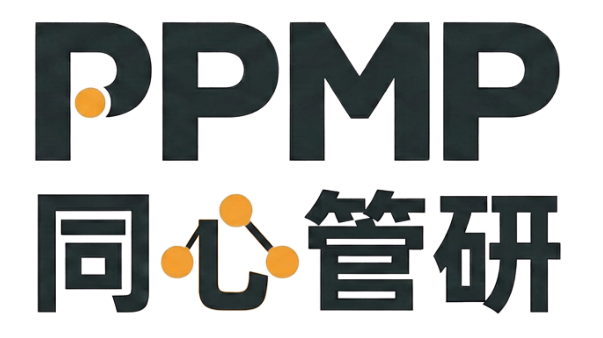

當項目規模擴張、行業風險疊加，傳統管理方式難以為繼。
數以千計的呈交、文件與報告，溝通碎片化 —— 這是一套「非結構化」的項目組合管理。
從時延到安全，每一個缺口都在吞噬效率與信心。
資訊傳遞慢，決策總是慢半拍。
多個頻道各自為政，難以追蹤。
現金流壓力與合約文件量雙重夾擊。
2026 年建造業 26 宗致命工傷，必須前置預防。
質量表現難以量化，整改被動。
可持續表現缺乏透明度的衡量。
PPMP 把孤立數據匯聚成單一可信源。
透過安全 API 整合既有系統，讓數據自在流動。
跨團隊協作工作流，資料只需錄入一次。
每個項目，都有一個可被信任的真相來源。
由公眾層到企業層，貫穿每一個維度。
項目 KPI 與組合概覽，對外公開的非敏感數據。
安全、質量、進度、可持續、合約成本與監控；跨項目比較與基準對標。
項目級日常記錄與監控管理，落到現場每一天。
從全維度數據量化項目表現，讓健康度一目了然。
跨項目、承建商與市場基準對標。
風險早警，主動約談承建商、加密巡查。
把經驗沉澱為Standard Operation Procedures - SOP，決策有據。
一路演進的產品藍圖。
平台正式上線，統一項目組合管理。
引入機械人與設施管理（Robotic + FM）。
整合智能監控與視覺辨識能力。
人工智能助手，讓管理更聰明。